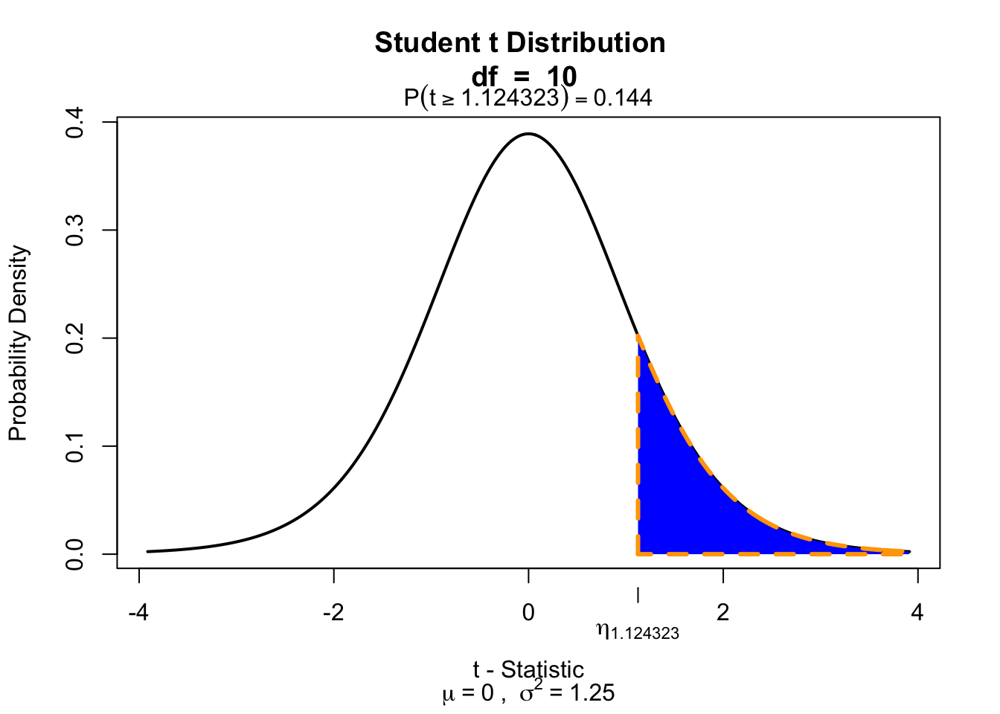
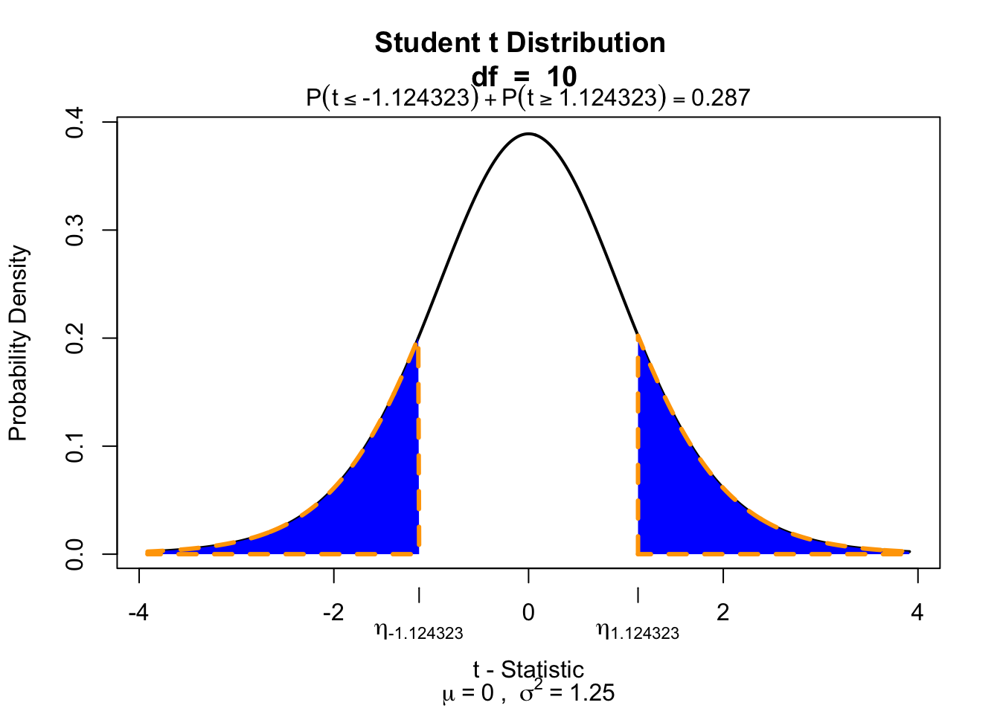

mu <- 120
n <- length(IQ.next.to.you)
x <- IQ.next.to.you
mean_x <- mean(x, na.rm = TRUE)
sd_x <- sd(x, na.rm = TRUE)
cbind(n, mean_x, sd_x) n mean_x sd_x
[1,] 5 123.4 22.67818https://maglit.me/nomaphochs
\[\text{outcome} = \text{model} + \text{error}\]
We use the one-sample t-test to compare the sample mean \(\bar{x}\) to the population mean \(\mu\).
Let’s take a different sample and calculate the mean of this sample.
mu <- 120
n <- length(IQ.next.to.you)
x <- IQ.next.to.you
mean_x <- mean(x, na.rm = TRUE)
sd_x <- sd(x, na.rm = TRUE)
cbind(n, mean_x, sd_x) n mean_x sd_x
[1,] 5 123.4 22.67818Does this mean differ significantly from the population mean \(\mu = 120\)?
\[T_{n-1} = \frac{\bar{x}-\mu}{SE_x} = \frac{\bar{x}-\mu}{s_x / \sqrt{n}} = \frac{123.4 - 120 }{22.68 / \sqrt{5}}\]
So the t-statistic represents the deviation of the sample mean \(\bar{x}\) from the population mean \(\mu\), considering the sample size.
tStat <- (mean_x - mu) / (sd_x / sqrt(n)); tStat[1] 0.3352399To determine if this t-value significantly differs from the population mean we have to specify a type I error that we are willing to make.
Finally we have to calculate our p-value for which we need the degrees of freedom \(df = n - 1\) to determine the shape of the t-distribution.
df <- n - 1; df[1] 4if(!"visualize" %in% installed.packages()) { install.packages("visualize") }
library("visualize")
visualize::visualize.t(-tStat, df, section = "upper")
visualize.t(c(-tStat, tStat), 10, section = "tails")
\[r = \sqrt{\frac{t^2}{t^2 + \text{df}}}\]
r <- sqrt(tStat^2/(tStat^2 + df))
r[1] 0.1653137